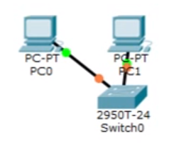
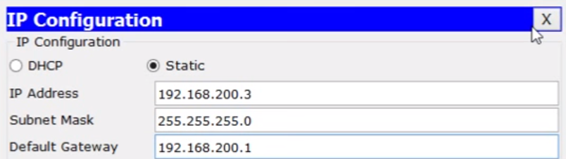
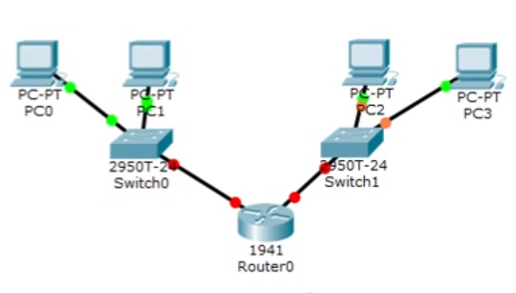
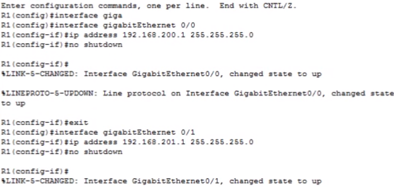
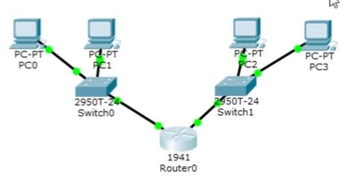
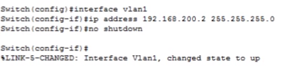
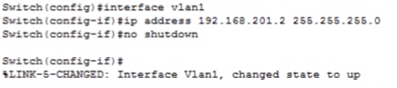
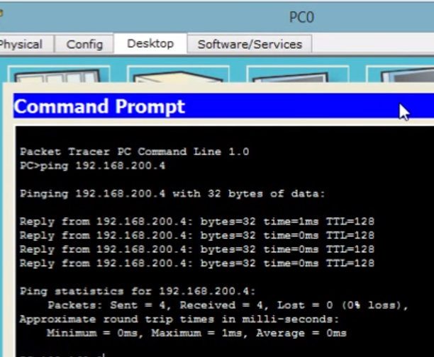

Личная страница
Студент
Охотников В.А.
Группа
ИДМ-17-05
Отчеты по лабораторным работам
Лабораторная работа №1 "Экосистема разработки программ с открытым кодом"
- Создание личной страницы
- Размещение личной страницы на хостинге
Лабораторная работа №2 "Разработка простого веб-приложения"
Приложение "Список дел".
Это приложение позволяет создавать перечень текущих заданий, отмечать выполненные задания и удалять неактуальные.
Исходный код
Лабораторная работа №3 "Настройка локальной сети передачи данных"
-
Создаем сеть, состоящую из двух компьютеров

-
Настраиваем адресацию компьютеров

-
Добавляем в сеть еще два компьютера через маршрутизатор

-
Настраиваем интерфейсы на маршрутизаторе

-
Маршрутизатор теперь имеет доступ к коммутаторам

-
Настраиваем интерфейсы на коммутаторах


-
Проверяем работоспособность сети

Вопрос по дисциплине "Интернет-технологии"
Вопрос:
Выберите только утверждения, характерные для масштабируемой векторной графики SVG
-
Является текстовым языком графики;
-
Допускает манипуляции над собой, и браузер может нарисовать фигуру снова;
-
Быстрый формат, т.к. нет надобности запоминать что-либо;
-
Зависит от разрешения.
Ответ:
-
Является текстовым языком графики;
-
Допускает манипуляции над собой, и браузер может нарисовать фигуру снова.